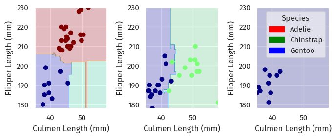

import seaborn as sns
import matplotlib.pyplot as plt
import warnings
from matplotlib import font_manager
font_manager.fontManager.addfont("C:\Windows\Fonts\FiraSans-Regular.ttf")
warnings.filterwarnings('ignore')
sns.set_theme()
sns.set(font="Fira Sans")Image credits: Artwork by @allison_horst. GitHub link
Instructions can be found at Classifying Palmer Penguins.
Explore
The penguins dataset features measurements for three penguin species observed in the Palmer Archipelago, Antarctica (more information in link).
Information on the data contained: Penguin size, clutch, and blood isotope data for foraging adults near Palmer Station, Antarctica
import pandas as pd
train_url = "https://raw.githubusercontent.com/middlebury-csci-0451/CSCI-0451/main/data/palmer-penguins/train.csv"
train = pd.read_csv(train_url)Lengths
We examine the first quantitative elements of the dataset - the penguins’ Culmen and Flipper lengths, and see how they relate to the penguins’ species.
# wrap legend
from textwrap import fill
train_map = train.copy(deep=True)
train_map["Species"] = train_map["Species"].apply(fill, width=20)lengthsPlot = sns.lmplot(
train_map,
x="Culmen Length (mm)",
y="Flipper Length (mm)",
hue="Species"
)These are three pretty distinct clusters, though with some overlap!
As such, we could probably say that the penguins with the smallest culmen and flipper lengths are probably Adelie penguins.
Blood isotopes
Next, we look at isotope data for these penguins:
isotopesPlot = sns.relplot(
train_map, x="Delta 15 N (o/oo)", y="Delta 13 C (o/oo)", hue="Species")These clusters turned out to be pretty inseparable.
Does blood isotope data have to do with where these penguins live?
isotopesIslandPlot = sns.relplot(
train_map, x="Delta 15 N (o/oo)", y="Delta 13 C (o/oo)", hue="Island")The answer is probably no; we see no patterns at all here.
Island
So where do these penguins live?
livePlot = sns.displot(train_map, x="Island", y="Species", aspect=1.4)train.groupby(["Island", "Sex", "Species"]).count()[["Region"]]| Region | |||
|---|---|---|---|
| Island | Sex | Species | |
| Biscoe | . | Gentoo penguin (Pygoscelis papua) | 1 |
| FEMALE | Adelie Penguin (Pygoscelis adeliae) | 19 | |
| Gentoo penguin (Pygoscelis papua) | 42 | ||
| MALE | Adelie Penguin (Pygoscelis adeliae) | 16 | |
| Gentoo penguin (Pygoscelis papua) | 54 | ||
| Dream | FEMALE | Adelie Penguin (Pygoscelis adeliae) | 20 |
| Chinstrap penguin (Pygoscelis antarctica) | 29 | ||
| MALE | Adelie Penguin (Pygoscelis adeliae) | 20 | |
| Chinstrap penguin (Pygoscelis antarctica) | 27 | ||
| Torgersen | FEMALE | Adelie Penguin (Pygoscelis adeliae) | 18 |
| MALE | Adelie Penguin (Pygoscelis adeliae) | 19 |
We observe that, Gentoo penguins only live on the Biscoe Islands, and Chinstrap penguins on Dream Island; Adelie penguins happily (or at least hopefully happily) live on all three islands.
Also, Torgensen Island only has Adelie penguins; the other islands have at least two species.
Looking at sex, the penguins on each island are pretty evenly split between male and female.
Note this might only be specific to our test-train split, so we need to be cautious of not over-fitting - we cannot say, for example, that a penguin on Torgensen Island is 100% Adelie.
Model
Prepare data
We prepare Species as labels, and then other features with pd.get_dummies().
Rows with invalid Sex fields or fields with NA are dropped.
Several identifying columns, like Individual ID, are also dropped.
from sklearn.preprocessing import LabelEncoder
le = LabelEncoder()
le.fit(train["Species"])
def prepare_data(df):
df = df.drop(
["studyName", "Sample Number", "Individual ID",
"Date Egg", "Comments", "Region"], axis=1
)
df = df[df["Sex"] != "."]
df = df.dropna()
y = le.transform(df["Species"])
df = df.drop(["Species"], axis=1)
df = pd.get_dummies(df)
return df, y
X_train, y_train = prepare_data(train)
X_train.head()| Culmen Length (mm) | Culmen Depth (mm) | Flipper Length (mm) | Body Mass (g) | Delta 15 N (o/oo) | Delta 13 C (o/oo) | Island_Biscoe | Island_Dream | Island_Torgersen | Stage_Adult, 1 Egg Stage | Clutch Completion_No | Clutch Completion_Yes | Sex_FEMALE | Sex_MALE | |
|---|---|---|---|---|---|---|---|---|---|---|---|---|---|---|
| 1 | 45.1 | 14.5 | 215.0 | 5000.0 | 7.63220 | -25.46569 | 1 | 0 | 0 | 1 | 0 | 1 | 1 | 0 |
| 2 | 41.4 | 18.5 | 202.0 | 3875.0 | 9.59462 | -25.42621 | 0 | 0 | 1 | 1 | 0 | 1 | 0 | 1 |
| 3 | 39.0 | 18.7 | 185.0 | 3650.0 | 9.22033 | -26.03442 | 0 | 1 | 0 | 1 | 0 | 1 | 0 | 1 |
| 4 | 50.6 | 19.4 | 193.0 | 3800.0 | 9.28153 | -24.97134 | 0 | 1 | 0 | 1 | 1 | 0 | 0 | 1 |
| 5 | 33.1 | 16.1 | 178.0 | 2900.0 | 9.04218 | -26.15775 | 0 | 1 | 0 | 1 | 0 | 1 | 1 | 0 |
Feature selection
We need to select 3 features for our classification model.
Since one of these need to be qualitative, we may have to look at more than 3.
From scikit-learn, 1.13. Feature Selection:
Univariate statistical tests
We can apply univariate statistical tests to find the statistically “best” features.
For classification, we have three scores available:
chi2is for contigency tables, or at least non-negative values. Since the columnDelta 13 C (o/oo)contains negative values, we cannot use this score.f_classifcomputes the ANOVA F-value.mutual_info_classifestimates mutual information for a discrete target variable.
We use SelectKBest to remove all but the best K features:
from sklearn.feature_selection import SelectKBest
from sklearn.feature_selection import f_classif
selector = SelectKBest(f_classif, k=3)
X_new = selector.fit_transform(X_train, y_train)
# scikit-learn does not keep names ):
# https://stackoverflow.com/a/41041230
X_train.loc[:, selector.get_support()].head()| Culmen Length (mm) | Flipper Length (mm) | Body Mass (g) | |
|---|---|---|---|
| 1 | 45.1 | 215.0 | 5000.0 |
| 2 | 41.4 | 202.0 | 3875.0 |
| 3 | 39.0 | 185.0 | 3650.0 |
| 4 | 50.6 | 193.0 | 3800.0 |
| 5 | 33.1 | 178.0 | 2900.0 |
We see that these three are all quantitative.
Therefore, we keep the top 2:
quant_selector = SelectKBest(f_classif, k=2)
X_new = quant_selector.fit_transform(X_train, y_train)
# scikit-learn does not keep names ):
# https://stackoverflow.com/a/41041230
X_train.loc[:, quant_selector.get_support()].head()| Culmen Length (mm) | Flipper Length (mm) | |
|---|---|---|
| 1 | 45.1 | 215.0 |
| 2 | 41.4 | 202.0 |
| 3 | 39.0 | 185.0 |
| 4 | 50.6 | 193.0 |
| 5 | 33.1 | 178.0 |
And then find the best qualitative feature:
qual_selector = SelectKBest(f_classif, k=6)
X_new = qual_selector.fit_transform(X_train, y_train)
# scikit-learn does not keep names ):
# https://stackoverflow.com/a/41041230
X_train.loc[:, qual_selector.get_support()].head()| Culmen Length (mm) | Culmen Depth (mm) | Flipper Length (mm) | Body Mass (g) | Delta 13 C (o/oo) | Island_Biscoe | |
|---|---|---|---|---|---|---|
| 1 | 45.1 | 14.5 | 215.0 | 5000.0 | -25.46569 | 1 |
| 2 | 41.4 | 18.5 | 202.0 | 3875.0 | -25.42621 | 0 |
| 3 | 39.0 | 18.7 | 185.0 | 3650.0 | -26.03442 | 0 |
| 4 | 50.6 | 19.4 | 193.0 | 3800.0 | -24.97134 | 0 |
| 5 | 33.1 | 16.1 | 178.0 | 2900.0 | -26.15775 | 0 |
The result seems to be on which island does the penguin reside.
We include all three Island features since only checking whether they live on Biscoe does not make sense.
cols = ['Culmen Length (mm)', 'Flipper Length (mm)',
'Island_Biscoe', 'Island_Dream', 'Island_Torgersen']Performance on Logistic Regression
We can also recursively consider smaller sets of features, and evaluate how this performs on a certain model.
The latter, with cross validation, is availiable as a built-in function RFECV.
For the cross-validation step, we use a strafied 5-fold cross-validator on logistic regression.
from sklearn.feature_selection import RFECV
from sklearn.model_selection import KFold
from sklearn.linear_model import LogisticRegression
rfecv = RFECV(
estimator=LogisticRegression(),
step=1,
cv=KFold(10),
scoring="accuracy",
min_features_to_select=2
)
rfecv.fit(X_train, y_train)
X_train.loc[:, rfecv.get_support()].head()| Culmen Length (mm) | Culmen Depth (mm) | Delta 15 N (o/oo) | Delta 13 C (o/oo) | Island_Dream | Sex_FEMALE | |
|---|---|---|---|---|---|---|
| 1 | 45.1 | 14.5 | 7.63220 | -25.46569 | 0 | 1 |
| 2 | 41.4 | 18.5 | 9.59462 | -25.42621 | 0 | 0 |
| 3 | 39.0 | 18.7 | 9.22033 | -26.03442 | 1 | 0 |
| 4 | 50.6 | 19.4 | 9.28153 | -24.97134 | 1 | 0 |
| 5 | 33.1 | 16.1 | 9.04218 | -26.15775 | 1 | 1 |
RFECV ranks 6 features as equally important - but why?
Here are the importance scores that RFECV determined:
X_train.columns
rfecv.ranking_
d = pd.DataFrame(columns=X_train.columns)
# Use `df.loc[len(df)] = arr` – rafaelc Oct 8, 2019 at 19:43
# https://stackoverflow.com/q/58292901
d.loc["Importance"] = rfecv.ranking_
d| Culmen Length (mm) | Culmen Depth (mm) | Flipper Length (mm) | Body Mass (g) | Delta 15 N (o/oo) | Delta 13 C (o/oo) | Island_Biscoe | Island_Dream | Island_Torgersen | Stage_Adult, 1 Egg Stage | Clutch Completion_No | Clutch Completion_Yes | Sex_FEMALE | Sex_MALE | |
|---|---|---|---|---|---|---|---|---|---|---|---|---|---|---|
| Importance | 1 | 1 | 5 | 9 | 1 | 1 | 2 | 1 | 4 | 8 | 6 | 7 | 1 | 3 |
And here is the mean test accuracy of the process with different number of features selected:
n_scores = len(rfecv.cv_results_["mean_test_score"])
plt.figure()
plt.xlabel("Number of features selected")
plt.ylabel("Mean test accuracy")
plt.errorbar(
range(2, n_scores + 2),
rfecv.cv_results_["mean_test_score"],
yerr=rfecv.cv_results_["std_test_score"],
)
plt.title("Recursive Feature Elimination with correlated features")
plt.show()
We see that, with 10-fold cross-validation, the mean test accuracy only got to 100% after selecting 6 features.
Therefore, RFECV is marking them as “equally important”.
We are thus resorting to the columns we selected in Univariate statistical tests.
Modeling
Logistic regression
The modeling process is more straightforward. Here, we use logistic regression:
from sklearn.linear_model import LogisticRegression
LR = LogisticRegression()
LR.fit(X_train[cols], y_train)
LR.score(X_train[cols], y_train)0.96875The model performed well, although it did not reach 100% accuracy on the training set.
Random forest
When we maintaining an ensemble of decision trees, we can let them vote on the best category.
This method was state-of-the-art before the rise of neural networks. 1
from sklearn.ensemble import RandomForestClassifier
from sklearn.model_selection import GridSearchCV
param_grid = {
'n_estimators': [5, 10, 15, 20, 25, 30],
'max_depth': [2, 5, 7, 9, 13]
}
RF = RandomForestClassifier(max_features=1)
GRF = GridSearchCV(RF, param_grid, cv=10)
GRF.fit(X_train[cols], y_train)
GRF.best_params_{'max_depth': 7, 'n_estimators': 15}Here, we use a grid search with cross-validation (GridSearchCV) to identify the best hyperparameters among a predefined param_grid.
Our GridSearchCV has cross-validated our Random Forest models, and selected the best parameters.
We can then access our best estimator with GRF.best_estimator_.
Testing
Now that we have two models, we can test their performance on the test set.
Logistic regression
First, gather the data and run logistic regression on it:
from sklearn.preprocessing import LabelEncoder
le = LabelEncoder()
le.fit(train["Species"])
def prepare_data(df):
df = df.drop(["studyName", "Sample Number", "Individual ID",
"Date Egg", "Comments", "Region"], axis=1)
df = df[df["Sex"] != "."]
df = df.dropna()
y = le.transform(df["Species"])
df = df.drop(["Species"], axis=1)
df = pd.get_dummies(df)
return df, y
X_train, y_train = prepare_data(train)
X_train.head()| Culmen Length (mm) | Culmen Depth (mm) | Flipper Length (mm) | Body Mass (g) | Delta 15 N (o/oo) | Delta 13 C (o/oo) | Island_Biscoe | Island_Dream | Island_Torgersen | Stage_Adult, 1 Egg Stage | Clutch Completion_No | Clutch Completion_Yes | Sex_FEMALE | Sex_MALE | |
|---|---|---|---|---|---|---|---|---|---|---|---|---|---|---|
| 1 | 45.1 | 14.5 | 215.0 | 5000.0 | 7.63220 | -25.46569 | 1 | 0 | 0 | 1 | 0 | 1 | 1 | 0 |
| 2 | 41.4 | 18.5 | 202.0 | 3875.0 | 9.59462 | -25.42621 | 0 | 0 | 1 | 1 | 0 | 1 | 0 | 1 |
| 3 | 39.0 | 18.7 | 185.0 | 3650.0 | 9.22033 | -26.03442 | 0 | 1 | 0 | 1 | 0 | 1 | 0 | 1 |
| 4 | 50.6 | 19.4 | 193.0 | 3800.0 | 9.28153 | -24.97134 | 0 | 1 | 0 | 1 | 1 | 0 | 0 | 1 |
| 5 | 33.1 | 16.1 | 178.0 | 2900.0 | 9.04218 | -26.15775 | 0 | 1 | 0 | 1 | 0 | 1 | 1 | 0 |
test_url = "https://raw.githubusercontent.com/middlebury-csci-0451/CSCI-0451/main/data/palmer-penguins/test.csv"
test = pd.read_csv(test_url)
X_test, y_test = prepare_data(test)
LR.score(X_test[cols], y_test)0.9411764705882353This score is less than we had in the training set, and also not what this blog post expected (100%).
We can take a look at what happened through plotting the decision regions (code source):
from matplotlib import pyplot as plt
import numpy as np
from matplotlib.patches import Patch
def plot_regions(model, X, y):
x0 = X[X.columns[0]]
x1 = X[X.columns[1]]
qual_features = X.columns[2:]
fig, axarr = plt.subplots(1, len(qual_features), figsize=(7, 3))
# create a grid
grid_x = np.linspace(x0.min(), x0.max(), 501)
grid_y = np.linspace(x1.min(), x1.max(), 501)
xx, yy = np.meshgrid(grid_x, grid_y)
XX = xx.ravel()
YY = yy.ravel()
for i in range(len(qual_features)):
XY = pd.DataFrame({
X.columns[0]: XX,
X.columns[1]: YY
})
for j in qual_features:
XY[j] = 0
XY[qual_features[i]] = 1
p = model.predict(XY)
p = p.reshape(xx.shape)
# use contour plot to visualize the predictions
axarr[i].contourf(xx, yy, p, cmap="jet", alpha=0.2, vmin=0, vmax=2)
ix = X[qual_features[i]] == 1
# plot the data
axarr[i].scatter(x0[ix], x1[ix], c=y[ix], cmap="jet", vmin=0, vmax=2)
axarr[i].set(
xlabel=X.columns[0],
ylabel=X.columns[1]
)
patches = []
for color, spec in zip(["red", "green", "blue"], ["Adelie", "Chinstrap", "Gentoo"]):
patches.append(Patch(color=color, label=spec))
plt.legend(title="Species", handles=patches, loc="best")
plt.tight_layout()plot_regions(LR, X_test[cols], y_test)On each island, it looked like the logistic regression found approximate lines that separated each species.
However, there is some overlap between each region, so accuracy was less than 100%.
Random forest
How did random forest do? Let us find out.
GRF.best_estimator_.score(X_test[cols], y_test)0.9705882352941176This is marginally better, but still not quite at 100% yet.
Again, here are the decision boundaries:
plot_regions(GRF.best_estimator_, X_test[cols], y_test)
Here, the shape of the decision boundaries suggest overfitting - perhaps we should revisit param_grid and find better hyperparameters.
Footnotes
Gomes, H.M., Bifet, A., Read, J. et al. Adaptive random forests for evolving data stream classification. Mach Learn 106, 1469–1495 (2017). https://doi.org/10.1007/s10994-017-5642-8↩︎